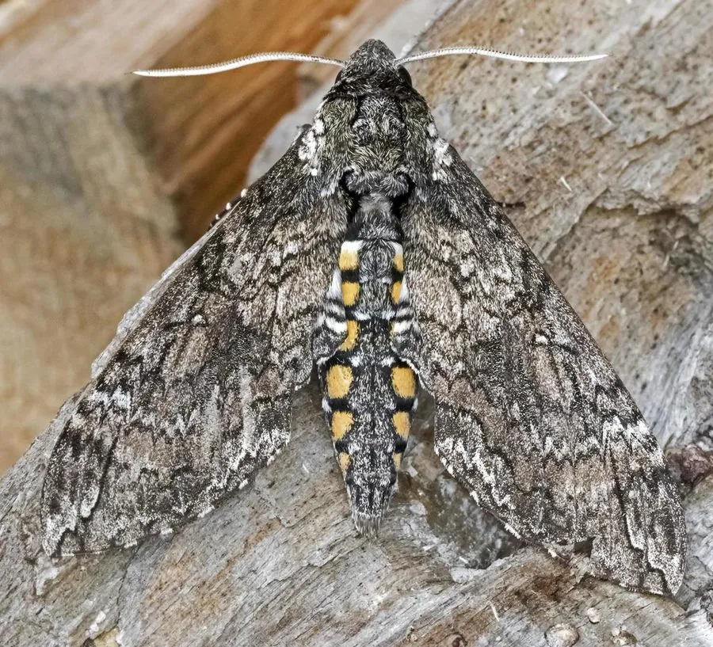

昆虫 · 动物界
烟草天蛾 Manduca sexta

北美洲常见的大型天蛾，幼虫取食烟草和番茄等茄科叶片，是实验室里昆虫生理学和嗅觉研究的重要模式物种。
- 分类
- 门节肢动物门纲昆虫纲目鳞翅目科天蛾科属天蛾属
- 栖息环境
- 农田、花园与荒地的茄科植物附近，成虫夜间访花
- 地理分布
- 北美洲和中美洲，从加拿大南部到南美北部
- 保护级别
- 暂无评估
物种志
烟草天蛾翅展约 10–12 cm，体粗壮呈流线型，前翅灰褐色带浅色斑纹，后翅有橙黄色横带和黑色边缘，腹部有黄黑相间的斑纹；幼虫绿色，体侧有白色斜纹，尾端有一根角状突起，体长可达 8 cm。
它一年发生多代，以蛹在土壤中越冬，成虫黄昏后活动，靠嗅觉寻找烟草等茄科植物的花朵吸蜜，悬停取食时像蜂鸟。幼虫取食烟草、番茄、辣椒等茄科叶片，能把植物中的尼古丁排出体外，因此能在含毒植物上取食。烟草天蛾是昆虫嗅觉、神经生物学和发育研究的常用模式昆虫，其幼虫体型大、易饲养，被广泛用于实验室。它分布于北美洲和中美洲，是当地常见的天蛾。
形态与习性
- 食性幼虫取食烟草、番茄、辣椒等茄科叶片；成虫吸蜜
- 翅展约 10–12 cm，幼虫体长可达 8 cm
- 生活史一年发生多代，以蛹在土壤中越冬
- 习性成虫黄昏活动，悬停吸蜜如蜂鸟
- 耐毒幼虫能排出烟草中的尼古丁，在含毒植物上取食
- 科研昆虫嗅觉和发育研究的模式昆虫
趣味知识
- 烟草天蛾幼虫能把烟草中的尼古丁排出体外，因此不怕有毒的烟叶。
- 成虫悬停吸蜜的姿态很像蜂鸟，常在黄昏时活动。
- 烟草天蛾是实验室里常用的模式昆虫，被广泛研究嗅觉和发育。